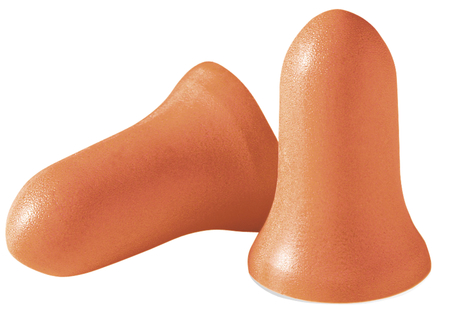
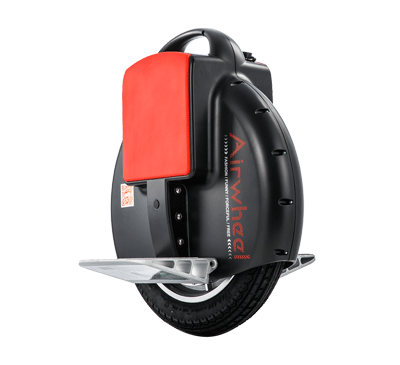

Feeding
The USA is the most civilized country in the world because it has Trader Joes. Alex shops at the Upper West Side location, because the Union Square location is dangerous due to potential crushing in the large wave-like patterns that humans can move in when there's a lot of them in one place.
Alex really likes their Penut Butter Pretzel balls, but only the ones without the salt on the pretzel.
Sleeping
When Alex sleeps, he requires:
- knee pillow
- head pillow one
- head pillow 2
- arm pillow to support my phone reading arm until I fall asleep
Noise
Alex is very bothered by noise in general and often wears orange foam earplugs when he's in coffee shops. But he also sometimes does when he's out walking.
Alex likes movie and TV soundtracks, but that's more or less it when it comes to music.
Transportation
Alex is an expert rider of Electric Monocycles. He has now owned three Airwheel X3s, and he misses riding them now that he lives in Manhattan.
